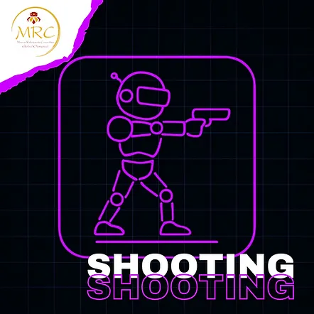
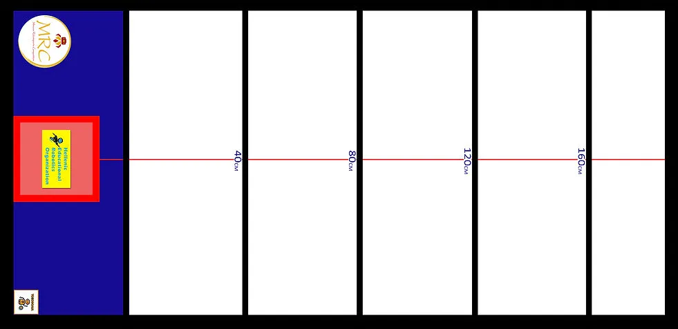
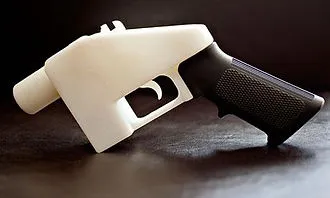
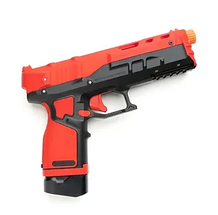
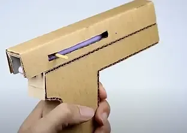
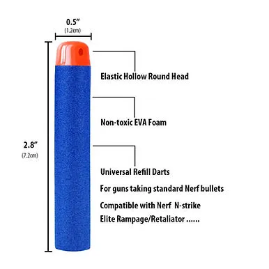
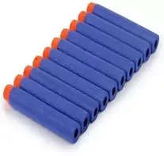

MRC SHOOTING (射擊競賽)
希臘官方原文規則（English）中文賽事規則
射擊原始內容
規則內容
射擊
年齡組別
兒童組 (10至12歲 / 國小)
青少年組 / 青年組 (12歲以上至18歲 / 國中及高中)
成人組 (18歲以上) - 僅限進階組別
⚠️ 本項目僅設一個級別：
所有類型的機器人同場競技。
🚨 各年齡組別分別進行比賽。
⚠️ 第零條規則 – 零容忍原則與常識
在所有運動項目中，均適用第零條規則，其內容如下：
➤「如果您不確定某件事是否被允許，那麼它很可能是不被允許的。」
所有規則皆基於常識、運動精神以及所有參與者的安全。
任何蓄意曲解、違反規則本意，或試圖利用灰色地帶獲取不公平優勢的行為，將不被容忍，並可能導致隊伍被取消比賽資格。
🎯 目標
- 運動員的目標是使用自製的、可發射 Nerf 泡棉子彈的槍枝，精確地射擊一系列物體。
- 這項運動需要精確性、機械技術和正確的計算。
👥 隊伍 – 教練
- 比賽以隊伍為單位參與，而非個人。
- 每隊可由二 (2) 至三 (3) 名隊員組成。
- 每隊必須指定最多一 (1) 名機器人運動員技師。僅允許機器人運動員技師進入準備區或比賽區域。其餘隊員必須留在比賽場地內，但不得排隊等候。➤ 換言之，他們不能佔用額外位置。若隊伍未遵守此規則，將被取消資格。
- 允許隊伍在每次賽道嘗試前更換指定的技師，讓所有隊員都有機會積極參與該項目，但此非強制性。
- 所有隊員必須年滿 10 歲 (相當於國小四年級或以上)。
- 隊伍教練必須年滿 20 歲。
- 為確保比賽順利進行，教練每註冊 3 支隊伍參加比賽，就必須配備 1 名助理。
- 每隊僅允許使用一台機器人。比賽期間不得更換機器人。
- 隊伍之間不得共用同一台機器人。
- 若隊伍的機器人遇到嚴重的技術問題，經主裁判許可後，僅允許更換微控制器或電子元件。
🤖 機器人運動員 – 機器人類別
- 本競賽開放給所有機器人運動員，無論使用何種機器人套件或硬體。
- 也允許自製的機器人槍枝參賽。
- 所有機器人運動員在各年齡組別中同場競技。
⚙️ 機器人運動員要求 – 規格
- 本競賽涉及手工製作的武器模擬構造，材質可為厚紙板、輕質塑膠、雷射切割輕質木材，或教育機器人套件的積木材料。不得使用金屬和現成的玩具槍，即使僅使用玩具槍的外殼塑膠也不行。
- 重要：搭乘飛機前往的隊伍必須將槍枝拆解，以免在安檢時遇到任何問題！！！
- 機器人運動員必須是半自主運作的。
- 槍枝必須使用上述材料手工製作。
- 其最大尺寸應為 25 公分 x 25 公分。
- 其總質量不得超過 500 公克。
- 它必須能夠發射 Nerf 風格的泡棉飛鏢。
➤ 構造必須具有清晰的手持手槍形式：一 (1) 個握把、一個扳機和一個朝前的槍管/槍口。
- 需要有扳機（可以是機械或基於感測器的元件）。
- 不允許使用暗示步槍/霰彈槍、槍托、第二個前握把或沒有清晰握把和扳機護圈的管狀發射器的形狀。
- 所有控制按鈕/開關必須位於握把/扳機區域內或附近，或位於適合手槍的位置（不能像通用設備那樣分散各處）。
- 槍管/槍口出口：必須在前方清晰可見。不允許使用改變手槍形狀的側面或底部出口。
- 禁止尖銳邊緣；為安全起見，邊角必須為圓角。
- 材料：允許使用塑膠/3D 列印/木材/厚紙板。不得使用金屬作為主要外部表面。允許使用小型金屬緊固件。
- 禁止使用逼真模仿真槍的視覺/裝飾元素（標記、型號名稱、序號等）。
➤ 合規性檢查（技術檢驗）：
- 側面輪廓視覺檢查：輪廓必須明顯符合參考照片中的槍枝形狀（握把–扳機–槍管）。
- 若裁判判斷其不類似手持手槍（例如，盒子、管子、步槍），則構造在形狀修正前無法通過技術檢查。
- 槍枝應具有主機/微控制器和壓力感測器/按鈕，因為泡棉飛鏢應在感測器/按鈕受壓後發射。
- 武器應是一個完整的、獨立的機器人。
- 槍枝應一次發射一發泡棉 Nerf 飛鏢。
- 槍枝應被編程為在發射泡棉飛鏢前 1 秒發出嗶聲。
- 槍枝可配備任何類型的感測器來定位目標物體，但非必要。
- 武器必須對使用者、裁判和觀眾完全安全。
- 禁止使用任何形式的推進氣體、化學品和危險材料。
- 允許使用彈簧。
- 允許使用雷射進行瞄準。
- 禁止以任何方式修改 Nerf 飛鏢。
- 允許使用任意尺寸和直徑的橡膠。
- 不允許任何類型的燃燒裝置。
🧪 技術檢查
- 初次技術檢查於比賽當日，在第一次嘗試時進行。
- 在初次檢查期間，將詢問隊伍關於槍枝程式的關鍵部分。➤ 隊伍必須打開裝有機器人程式的筆記型電腦。➤ 若從回答中明顯看出隊伍不理解程式，他們將受到相當於其在該項目中所得分數 -20% 的罰則。
- 技術檢查包括根據上述規格進行的槍枝檢查。➤ 若槍枝未達要求，將不允許其參賽，並自動取消其在该項目的資格。
- 初次檢查完成後，槍枝將被分配一個唯一的 ID 編碼。
- 若隊伍在初次技術檢查時未到場，將導致自動取消比賽資格。
- 在每次嘗試前，助理裁判也會進行二次技術檢查。
- 槍枝技師必須佩戴安全眼鏡。防護裝備在比賽場地上，賽前和賽中皆為強制性。防護裝備將在技術檢查期間進行檢查。
- 缺乏全部或部分防護裝備將成為隊伍被取消該項目資格的理由。
🏟️ 場地
- 比賽賽道尺寸為 長 2.36 公尺 x 寬 1.14 公尺 x 周邊圍欄高度 5 公分。
- 其顏色為白色，且防水布的質地可印刷。
- 周邊有一條 5 公分粗的黑線。
- 在寬度的一側有一個藍色矩形框，尺寸為 1.05 公尺 x 40 公分。
- 在其中間且位於邊緣處，有一個紅色正方形框，尺寸為 30 公分 x 30 公分（技師位置）。
- 在紅色正方形內有一個木質方形底座，尺寸為 長 25 公分 x 寬 25 公分 x 高 10 公分（技師手部支撐）。
- 標靶是 3 個由塑膠材料製成、重量不同的物體，位於賽道表面上方 50 公分高度處。每個物體分數不同：10 分、25 分、50 分。
- 物體直接放置在運動員對面，距離分別為 120 公分、160 公分。
- 在比賽開始前，將有測試回合供槍枝進行測試，時間有限，具體時間表將於比賽當日公布。




參考照片


下載 3D 檔案以列印您自己的標靶。
奧林匹亞標靶的尺寸可能略有不同。
🏆 比賽
⏱️ 準備
- 槍枝技師就位於賽道上紅色正方形前方的位置。
- 技師的手不得超出紅色正方形或木質底座。他也可以將手肘靠在底座上。
🏁 開始 – 比賽流程
- 裁判將標靶箱放置在第一個距離（1.20 公尺）處。
- 槍枝技師裝填槍枝並瞄準三個標靶中的任何一個。
- 技師扣動扳機；必須聽到嗶聲，且泡棉飛鏢必須被發射。
- 若成功擊中標靶，則獲得該標靶的分數。
- 技師重新裝填武器並瞄準第二個標靶；扣動扳機（嗶聲 + 發射）。
- 若擊中，則將該分數加入當前總分。
- 重複上述程序於第三個標靶；將其分數加入，裁判記錄 1.20 公尺距離的總分。
- 標靶順序沒有要求（第一/第二/第三由技師決定）。
- 裁判將標靶箱移至第二個距離（1.60 公尺）處。
- 對 1.60 公尺距離重複步驟 2–7；裁判記錄該總分。
- 裁判將分數輸入計分系統，該系統將兩個距離的總分相加。
🔁 回合 – 嘗試 - 比賽程序
- 比賽時間為 2 小時。
- 在此期間，每位技師將根據組委會公布的順序，在賽道上進行多次嘗試。
- 若技師未在排隊中，則該次嘗試視為放棄，由下一位技師遞補。錯過嘗試的技師必須等到所有其他嘗試完成後，才能再次輪到。
- 裁判記錄每次嘗試的分數。
- 槍枝在每次嘗試前將通過助理裁判的技術檢查。
- 不允許重新開始。
- 隊伍可在每次嘗試前更換指定的技師（可選，以讓更多隊員參與）。
- 隊伍在所有嘗試中取得的最高分數計為該隊的官方分數，並決定獲勝者（最佳嘗試計分）。
❌ 嘗試結束
- 當技師完成兩個距離的射擊時。
- 若槍枝遇到技術問題。
- 若技師在嘗試過程中證明無法直線瞄準，且對其自身、裁判或比賽場地上的參與者構成危險時。
- 當分配的嘗試時間窗口到期時（根據賽程/裁判的定義）。
- 發生任何安全違規時（例如，瞄準目標區域外、越過安全線），由裁判酌情決定。
- 嘗試開始後未經授權對槍枝/標靶/場地進行物理干預時（超出定義程序）。
- 若槍枝停止移動且無法在合理時間內繼續程序，由裁判決定。
- 若槍枝離開指定射擊區域或越過安全邊界。
- 若任何拋射物離開比賽場地或進入觀眾/工作人員區域（為安全起見立即停止）。
- 若隊伍未能遵循裁判指示或定義的比賽程序。
- 若裁判因任何原因發出停止命令（例如，安全、場地問題、不可抗力）。
🟥 隊伍取消資格
在以下情況下，隊伍將被取消比賽資格並必須退出：➤ 隊伍的成績將不予計算，也不會出現在官方比賽排名中。
- 若槍枝不符合運動規則中定義的規格，且隊伍拒絕進行必要的調整。
- 若任何技師行為不當或不尊重他人，使用侮辱性語言、挑釁，或對其他參與者或裁判進行口頭（或其他方式）攻擊。
- 若發現槍枝並非自主運作，而是透過藍牙、Wi-Fi 或任何類似技術進行遠端控制。
✅ 允許 / ❌ 禁止
✅ 允許：
- 使用任意直徑和厚度的普通輪胎。但請注意，您不得建造像弓一樣瞄準的武器！！！在這種情況下，您的武器將無法通過技術檢查。
❌ 禁止：
- 使用可能傷害觀眾、裁判甚至其教練的配件。
- 使用推進劑或任何其他材料來增加威力。
- 比賽期間將槍枝分解成碎片或以任何方式擴展。
- 遠端控制。
- 使用氣動裝置。
- 以任何方式修改 Nerf 飛鏢。若對隊伍的飛鏢有任何疑問，裁判將在比賽期間提供飛鏢給隊伍，隊伍不會使用自己的飛鏢。
🏆 獲勝者
每個年齡組別的前 3 名獲勝者是兩個距離總分最高者。
最佳分數用於決定以下名次：
🥇 第一名 🥈 第二名 🥉 第三名
若出現平手，則考慮隊伍先前的最佳分數，依此類推。